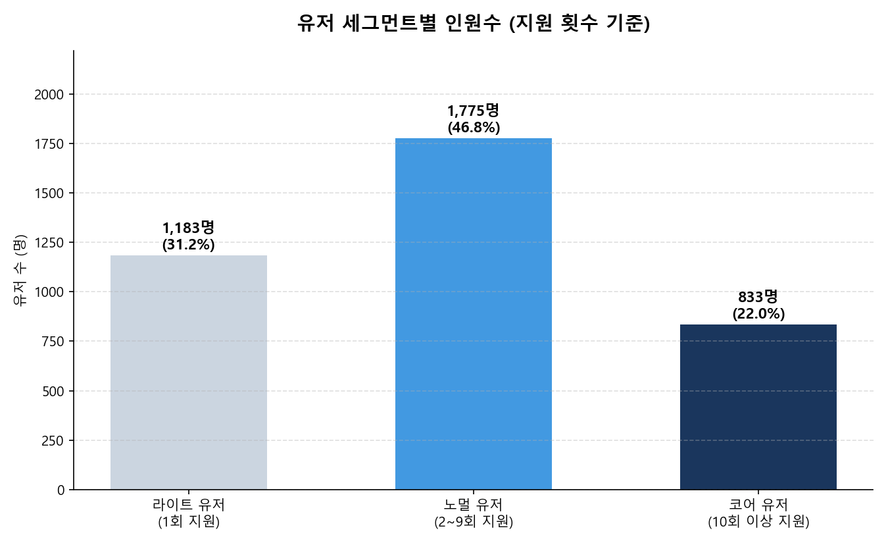
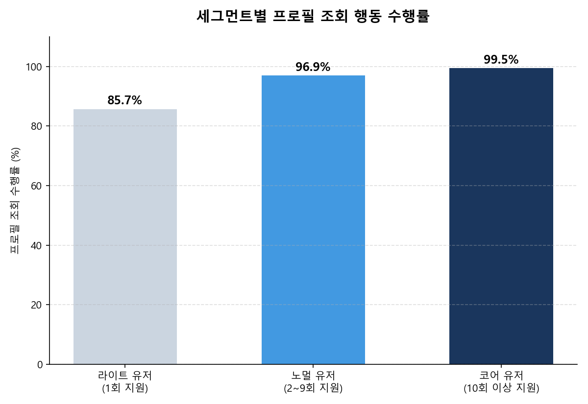
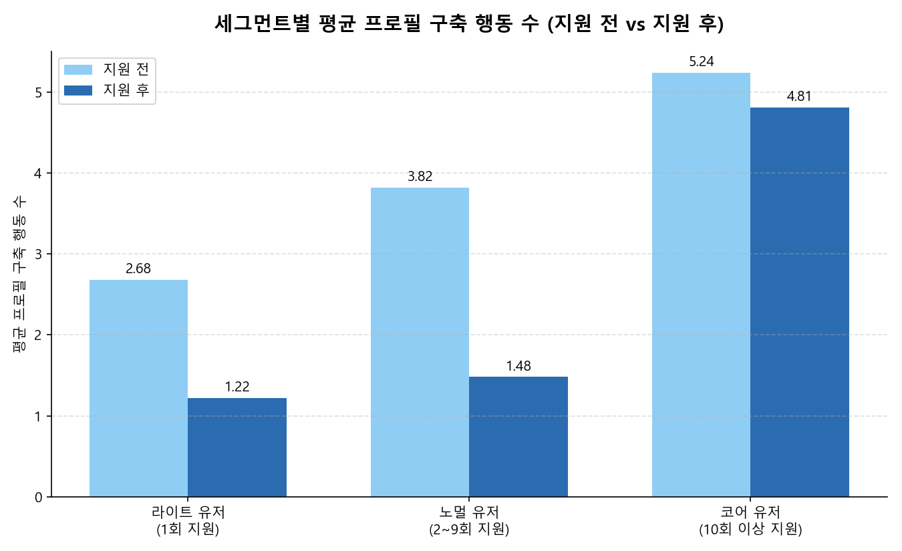
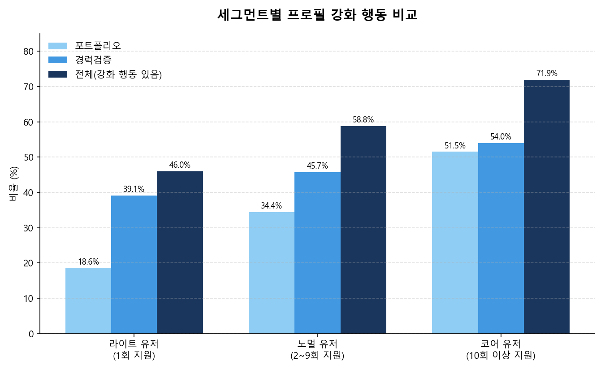
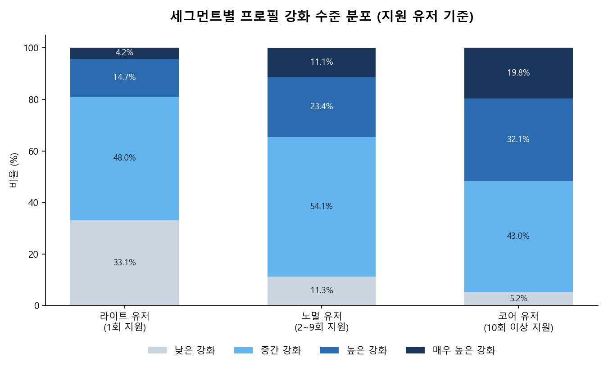

분석 기간 2022-01-01 ~ 2023-12-31 · 세부 보고서: 01_Acquisition · 02_Activation · 03_Retention · 04_MultiApply_Segment · 05_CoreUser
채용 플랫폼의 핵심 가치는 단순 방문자를 실제 구직 활동을 수행하는 유저로 전환하고, 이들이 서비스에 지속적으로 정착하도록 만드는 것이다. 이 프로젝트는 "어떤 행동이 좋은 유저를 만드는가"와 "좋은 유저는 어떤 경로로 서비스에 정착하는가"라는 두 질문에 답하기 위해, 서버 행동 로그(log_2022, log_2023)와 지원·북마크 이력(Application, JobBookmark)을 가입(Acquisition) → 활동(Activation) → 재방문(Retention) 흐름으로 분석했다.
이 흐름을 그대로 따라가는 것만으로는 "좋은 유저"가 구체적으로 누구인지 정의할 수 없다는 문제가 있었다. 그래서 분석 후반부에는 지원 횟수를 기준으로 유저를 세그먼트화하고, 세그먼트마다 프로필 관리 행동(이력서·경력·포트폴리오 등)이 어떻게 다른지를 교차 분석해, "무엇이 유저를 반복 지원자로 성장시키는가"까지 규명하는 것을 최종 목표로 삼았다.
| 노트북 | 분석 축 | 핵심 산출물 |
|---|---|---|
| 01_Acquisition_Report | 가입 퍼널·유입 경로·가입 소요시간 | 가입 완료 4,257명, 중앙값 소요시간 2분 16초, CRM/이메일이 최대 유입 채널 |
| 02_Activation_Report | 가입 후 검색·지원·북마크 활동 | 가입 유저의 95.8% 이상 지원 경험, 프로필 먼저 편집한 유저의 지원 횟수가 더 높음 |
| 03_Retention_Report | URL 로그 기반 리텐션 지표 계산 | Day N / 코호트 / 일별·롤링 리텐션 곡선 (수치 해석은 05에서 종합) |
| 04_MultiApply_Segment_Analysis | 지원 횟수별 세그먼트 특성 사전 탐색 | 지원 횟수가 늘수록 지원 기업 수·다양성이 함께 증가 — 05의 프로필 강화 분석으로 연결되는 다리 |
| 05_CoreUser_Report | 01~04 통합 + 회사 탐색·오퍼·프로필 강화 | 지원이 행동 전환의 분기점, 프로필 강화 유저의 지원 횟수가 약 2배 |
01~03은 "가입한 유저가 실제로 무엇을 하는가"를 추적하는 파이프라인이고, 04는 이 흐름을 "지원 횟수"라는 하나의 축으로 압축해 세그먼트 관점을 예비 탐색한다. 05는 이 모든 결과를 통합하면서, 04에서 예비 탐색한 지원 횟수 세그먼트를 프로필 강화 행동과 교차 분석하는 것으로 마무리된다. 아래 3절은 그 최종 교차 분석 — 즉 이 프로젝트가 도달한 결론 — 을 유저 세그먼트별로 정리한 것이다.
세그먼트 정의: 리텐션 유저(가입 완료 + 지원 완료 + 24시간 이후 재방문)를 지원 횟수 기준으로 3개 그룹으로 나눈다.

세그먼트가 올라갈수록 프로필을 조회하는 비율부터 뚜렷하게 높아진다.

프로필을 실제로 "구축"(수정·작성)하는 행동은 지원 후보다 지원 전에 더 많이 발생한다 — 세 세그먼트 모두 동일한 패턴이다.

포트폴리오 등록·경력검증 같은 실질적인 "강화" 행동으로 좁혀 봐도 같은 계단식 패턴이 반복된다.

강화 행동을 조회·등록 여부가 아니라 "얼마나 깊이" 했는지(강화 수준 4단계)로 나누면, 세그먼트 간 격차는 더 크게 벌어진다.

이 프로젝트의 5개 노트북을 관통하는 하나의 이야기는 다음과 같다.
즉 이 플랫폼에서 "좋은 유저"는 우연히 여러 번 지원하게 된 유저가 아니라, 가입 이후 프로필을 선제적으로 정비한 뒤 지원에 나서고, 그 결과로 더 많이, 더 깊이 지원을 이어가는 유저다. 서비스 개선 방향 역시 이 지점에 맞춰야 한다 — 가입 직후 프로필(특히 포트폴리오·경력검증) 완성을 유도하는 온보딩이, 다회 지원자·코어 유저를 늘리는 가장 직접적인 레버다.
각 축에 대한 상세 수치와 근거는 개별 보고서(01~05)를 참고한다.
4절의 결론은 어디까지나 관측 데이터에서 나온 상관관계다. "프로필을 강화하면 지원이 늘어난다"와 "원래 구직 의지가 강한 유저가 강화도 하고 지원도 많이 한다"는 지금까지의 분석만으로는 구분할 수 없다. 이 인과관계를 실제로 검증하기 위한 실험 설계안을 별도로 작성했다.
AB_Test_Plan.md — 가입 직후 온보딩에서 포트폴리오·경력검증 작성을 유도하는 넛지를 무작위로 노출해, 노출 여부에 따라 이후 지원 활동(7일 내 강화 행동 완료율, 30·90일 지원 횟수)이 실제로 달라지는지 검증하는 A/B 테스트 설계안이다. 대상·지표·표본 크기·예상 소요 기간(신규 가입 속도 기준 약 2~8개월, MDE에 따라 상이)까지 정리되어 있다.
이 실험을 통해 4절의 상관관계가 실제 인과관계로 확인되면, "가입 직후 프로필 강화 온보딩"이라는 제안은 추정이 아니라 검증된 효과를 가진 액션이 된다.
데이터 출처 참고: 2·3절의 세그먼트 인원수·프로필 구축 행동 수 차트는 outputs/코호트별_지원시점_행동수_분석.csv, 나머지 프로필 조회·강화 관련 차트는 outputs/dashboard_source/의 CSV(원래 팀 대시보드 제작에 쓰인 원본 산출물)를 이 보고서를 위해 직접 다시 시각화한 것이다. 이 산출물들은 05_CoreUser_Report.ipynb의 프로필 강화 분석(11절) 로직과 수치가 일치하지만, 생성 당시의 export 코드는 현재 노트북에 남아있지 않다(notebooks/_cache/README.md, README.md 참고).